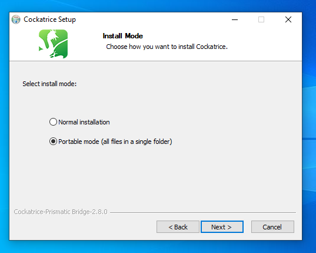

Un programa portable es un programa que tiene todos sus componentes y archivos necesarios en una única carpeta. Realmente muchos programas no portables se pueden usar así, si realizas la instalación en una localizada y la mueves por allí en algo como una unidad USB, por ejemplo, pero no es recomendable: el programa podría estar cogiendo archivos de configuración de otro lugar y al trasladarlo de ordenador se pierdan, aunque puedas mover la carpeta dentro del mismo ordenador sin que nada se rompa.
Tampoco varían los requisitos técnicos de un programa portable; como mucho varían en tamaño.
Así que, ¿cómo consigo un programa portable? Pues es bien sencillo:
| PORTABLE | NO PORTABLE |
|---|---|
|
|
Primero nos dirigimos a la página web de Wireshark en la sección de Descargas. Una vez allí, buscamos la opción Windows Intel PortableApps y hacemos click. Comenzará la descarga.
Una vez descargado lo abrimos desde el historial de descargas del navegador o desde la carpeta Descargas.
Una vez abierto nos dará a elegir idioma. Por defecto dejará marcado el idioma del sistema. Le damos a aceptar y continuamos al cliente de instalación. La primera sección es de bienvenida, así que pulsamos siguiente.
Ahora nos pedirá la ruta donde instalará el programa portable. Por defecto está en la carpeta donde está el instalador, así que voy a cambiarla. Hago click en examinar y selecciono el lugar donde quiero instalar el programa portable, que será Escritorio en mi caso.

Damos a aceptar y veremos que el destino ha cambiado. Ahora pulsamos Instalar y comenzará la instalación.
Cuando acabe pulsamos Terminar, aunque podemos marcar la casilla para arrancar el programa al cerrar si queremos. Veremos ahora en nuestro destino la carpeta del programa y si entramos podremos ver un ejecutable para lanzarlo.
Al igual que con el anterior nos dirigimos a su página web y a la izquierda, debajo del logo, elegimos Windows y comenzará la descarga del instalador. Una vez descargado lo ejecutamos desde el historial del navegador o la carpeta Descargas.
La primera parte del instalador es la bienvenida, así que clickamos en Next. La segunda parte es el acuerdo de usuario el cual tendremos que aceptar pulsando en I agree. Y ahora sí podemos elegir el modo de instalación.
Las opciones son: Instalaión normal e Instalación portable. Elegiremos esta última. Al igual que con el anterior nos pedirá el directorio de destino, el cual podremos cambiar escribiendo en la barra o seleccionando manualmente con Browse, exactamente igual que con Wireshark. Tras ello comenzará la instación.
Cuando acabe tendremos la carpeta del programa en el destino, y dentro de ella veremos también el programa, solo que a diferencia de wireshark que tenía su ejecutable a parte y bien visible, este está entre los archivos de la carpeta raíz. De hecho, esto último es lo más frecuente en los programas portables.